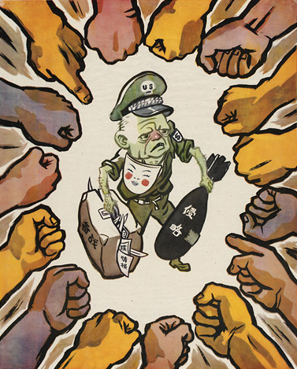
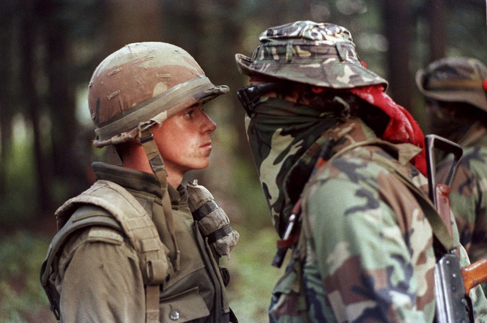
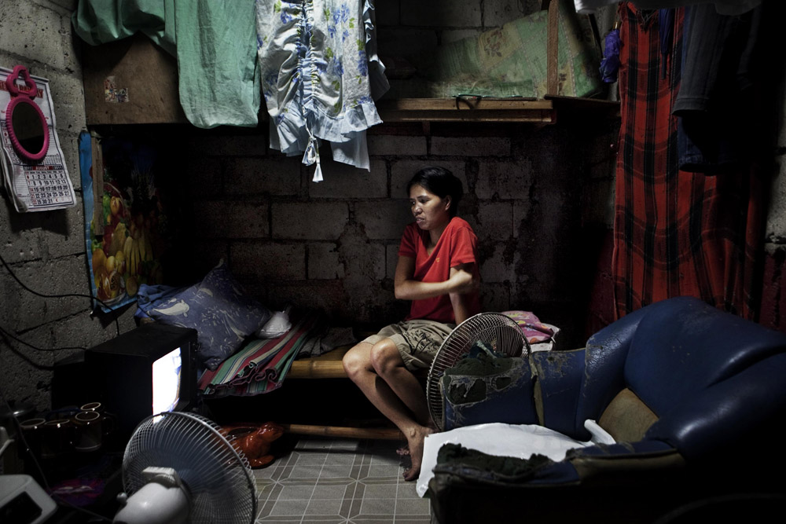
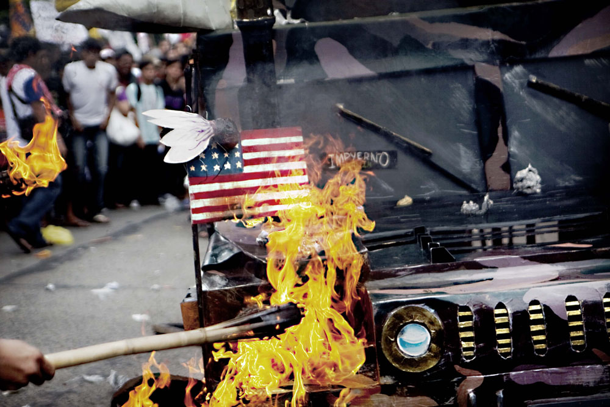
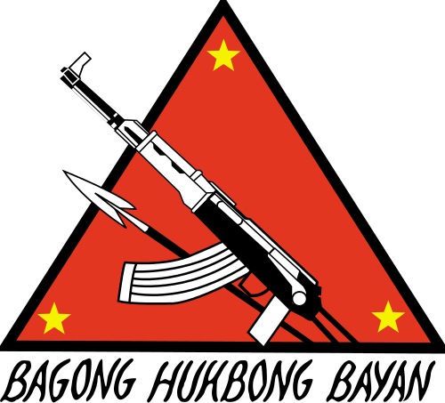

FRIDAY, MAY 23rd, 2014
Issue #2 | Revolution In The Core: Vanguardizing The Lumpenproletariat, Triggering Class Dysphoria, Part II
WRITTEN by FENG HUANG aka IRON PHOENIX
In the first issue of IRON PHOENIX Weekly, I analyzed the unique revolutionary situation of the First World, approaching it from a Third-Worldist mindset. But, in order to firmly cement the Third-Worldist analysis and worldview, it is necessary to view and review it, have it criticized and self-criticize it at length. Therefore, I am planning the first issue of the Quarterly to take a look at the unique revolutionary situation of the Third World, by continent. However, I think for the second issue of IPW, I’ll make some exposition and enlargement to the first issue’s analysis. This issue includes:
- EXPOSITION of how proletarian struggle is bound to national liberation struggles.
- ENLARGEMENT of the advanced revolutionary character of the lumpenproletariat.
I’d like to publically align my sympathies to the former MIM (MIMists), the RAIM (RAIMists) and Anti-Imperialism.com, from whom I take a large sum of my revolutionary learnings. Their staunchness and arduousness in advancing M-L-M beyond the smallness and backwardness of the First-Worldists and the RIM is highly admirable. Towards the broadest united front, and widest mass line in history, comrades!
Let’s get to it.
The responses I received from the first issue of IPW included criticisms that my writing was “too pedantic” (an anarchist) and “too anti-White” (a White comrade).
I’d like to illuminate the latter. On the former, I’ll hold my tongue.
Firstly, Maoism Third-Worldism is not anti-revolution or anti-White. It is not fueled by an opportunistic desire to tear down the movement in the First World. “Third-Worldist” organizations such as Leading Light are counter-revolutionary in practice, and do not move. Moving small quantities of money to the People’s Wars is not revolutionary. Charity work is not revolutionary work. The Third-Worldists do not wish for First Worlders to simply sit on their hands and wait for revolution. We support building the subjective forces for revolution in the First World! We are for revolutionary national liberation struggle and proletarian struggle; We are against left-sensationalism, tailism, and efforts to radicalize spontaneous economism such as the Wisconsin protests or the Occupy Wall Street movement. Signmaking, picketing, boycotting is not revolutionary work! Why do you think they permit it?
The Third-Worldists recognize that the First World movement is not moving due to errors in First-Worldist analyses, and we are thusly, against First-Worldist revisionism.
Let us bury F.W. revisionism six feet below GPW and GNDR.
Comrade Lin Biao wrote, in 1965[1]:
“Since World War II, the revolutionary movement has, for various reasons, been temporarily held back in the North American and West European countries, whereas the people’s revolutionary movements in Asia, Africa and Latin America has been growing vigorously.”
The Third-Worldists recognize that the primary contradiction of today is core v. periphery, meaning capitalist-imperialist powers v. powerless nations in the Third World. According to Marxist theory, it is contradictions that shape society, thus the terrain of the struggle. The terrain of the class struggle of today is capitalist-imperialism and national oppression. Therefore, revolutionary work is anti-imperialist work and national-iberationist work. Further, we recognize the problem of the large labour aristocracy and larger petty-bourgeoisie in the imperialist centres (KKKanada, AmeriKKKa, Divided KKKdom), who’re unlikely to give up their nice homes, driveway of cars, and desk jobs to give their whole life to revolution. Further again, we recognize that the labour aristocracy and petty-bourgeoisie classes of the First World are largely White and aligned to a nation of White culture and White hegemony. Revolutionary work is counter-hegemonic not anti-White. After all, I am a White Euro-settler, and I am a Maoist Third-Worldist!
For correctly analyzing the society of today, and by working to counterattack the revisionism of today, Maoism Third-Worldism is the Marxism of today. Although we are small in numbers, we are large in mind and spirit, as the Marxists of Tsarist Russia or colonial China were. And, yes! We recognize that Maoism Third-Worldism is not yet whole in theory, and needs further development.
Again, Maoism Third-Worldism is not:
- First World defeatism.
- The advocating of the racial ascendancy of non-Whites over Whites.
What Maoism Thirld-Worldism is, in essence, is:
- The advocating of “do more, not less for revolution”.
- Defeat of First-Worldist revisionism.
National Liberation Needs Communist Revolution, And Communist Revolution Needs National Liberation
“If you do not condemn colonialism and side with the colonial people, what kind of revolution are you waging?”
—COMRADE HO CHI MINH
Communists in the First World have forgotten what solidarity means. It means more than unity in the abstract. It means unifying despite differences, and combining if there are none. It means criticizing, being criticized, and self-criticizing. It means mutual support and the strongest sense of camaraderie. The highest form of solidarity between the oppressed is the most beautiful, revolutionary concept imaginable. If one bleeds, we all bleed. If one wins, we all win. Why, then, are communists in the First World not actively working to build the highest form of revolutionary solidarity possible? Third-Worldists argue that it is because they emphasize the primary contradiction of yesterday, heedless to the primary contradiction of today, and have a chauvinist revolutionary attitude. (“You are not a true Marxist!”, “This is real socialism!”)
The primary contradiction of today is core v. periphery. In the periphery, this takes the form of a struggle between the national proletariat/peasantry and the comprador bourgeoisie, aided by landlords and bourgeois-nationalist forces; In the core, this takes the form of a struggle between the largely non-White proletariat and White haute-bourgeoisie, aided by the largely White labour aristocracy and large petty-bourgeoisie. One type of struggle in the core is the struggle for national liberation, or for whole new nations, and this struggle is not waged on the dark plane of class war, but on a darker plane underneath it. Too often, the labour aristocracy gains by fighting against national liberation, and that is why we emphasize its precedence.
Below The Class War, There Is A Civil War
There are three types of wars being waged in Kanada/Amerika:
- Class war: Struggle between those who have none and those who have it all.
- Colonial war: Struggle between colonized peoples and the agents of colonization.
- Civil war: Infighting between oppressed groups, commonly national groups in the form of gang wars, as well as between women and others.
First-Worldist theory highlights the class war, and pays no heed to the colonial and civil wars. First-Worldists, coming from a mechanical understanding of Marxism, may even denounce all forms of nationalism, the national movement or national liberation itself. This is non-Marxist. The civil war is of primary revolutionary consequence, particularly in the imperialist core, but worldwide as well. Imperialism’s wretched hands are choking all nations, all nations deserving of liberation are under a form of national oppression. Many First-Worldists argue that socialism comes first... it cannot! If it does, you’ll naturally begin a period of socialist-imperialism.
First, let us define nationalism. Nationalism is love of the culture and history of one’s nation, and the identifying of self or others by nation. To put that in perspective, what does that say about Klanadian or Ameriklan nationalism? Nationalism here is love of the culture and history of racism, colonialism, genocide and imperialism. It is White nationalism in disguise.
There are two types of actually-existing nationalism in the world:
- Civic nationalism: A grotesque form of nationalism, predominantly in ex-settler countries, where inclusion is granted according to one’s degree of White-washing.
- Ethno-nationalism: An archaic form of nationalism, where brotherhood and sisterhood is defined by bloodlines and skin colours.
National-liberationists promote a form of nationalism characterized by liberation from hegemony, unity among all “sub-national” ethnic groups, and proletarian internationalism. This type of nationalism is commonly socialist and pan-nationalist (Onkwehón:we pan-nationalism, Afrikan pan-nationalism, Arab pan-nationalism). Although firmly rooted in culture and history (more so in counter-culture and people’s history), under pan-nationalism, membership goes beyond fraternity and sorority, and is characterized by choice, unbreakable solidarity and comradeship, wherein all members are conscious of their national, continental, and international rights, duty and identity.
National-liberationists do not desire power over small communities, or autonomous regions underneath a nation, rather they desire land and the freedom to construct a new nation that grants all power (political, economic, social, cultural) to their people. We cannot put this on the backburner, and argue that communist revolution comes first. They occur simultaneously! When communist revolutionaries stumble, our liberationist comrades give us a hand. If they stumble, let us give them ours. Developing the subjective forces for total transformation of society means developing forces for revolution and national liberation, socialist-in-character.
Third-Worldism calls on proletarian forces and national liberation forces, to unite worldwide. We do not wish to combine forces into a single party. Let us come together naturally as part of the process of total transformation. Let us build a united front.
The revolutionary national movement for people’s liberation and self-determination is fruitless if it is not fought alongside communist revolution, and likewise, the revolutionary movement for socialism and communism is fruitless if it is not fought alongside national liberation struggles. Why? A warrior of the Anishinabek Confederacy To Invoke Our Nationhood argued that “Marxists need to be more Anishinabek”, fundamentally meaning Marxists lack “warrior spirit, love for the greenest Earth”. I agree, and argue that warriors of national liberation need to be more Marxist, and I point to the fall of Marx-lacking anti-colonialist struggles in Afrika in making my argument. We have a lot to learn from one another, and rebuilding the rusted links connecting humanity is going to be a challenge. Let them hold one epoch longer.
All boots stand on common ground! All guns point to common sky!
Unite for the war to end all war: class war, colonial war, civil war, and imperialist war!

All hands together for revolution, regardless of your skin colour!
Regrettably, this is merely an abstract view of many, and oftentimes contradictory movements for national liberation. In order to make a more concrete analysis, let us weigh the polemics of two contradictory spokespeople for Black national liberation: Rashid of the New Afrikan Black Panther Party (Prison Chapter) and Comrade Shakur, a soldier of the New Afrikan People’s Liberation Army, member of New Afrika and of its Provisional Government.
By analyzing (some of) their polemics, I am affirming two points:
- Before a national government is weakened and helpless, provoking revolution is folly.
- Revolution comes to the First World from the Third World, and the forces who carry it here are primarily lumpenproletarian (Although, I’ll touch briefly on this, and outline the complexities of it in From The “Countryside” To The “City”).
One Drop Of Afrikan Blood Sets One Outside Of The “Melting Pot” Of White AmeriKKKa: Not All Of Us Are Burning, But Class Is
What is national liberation? What is self-determination? It is a movement to free a people from control of the dominant national power, win land, set up a national government by its people for its people, as well as other national state-forms (armies, committees, political parties, cultural institutions, etc.). A national liberation movement is based on a question of nationalism (“Do we constitute a nation inside of a nation?”, “If so, where is our national territory?”).
The members of the New Afrikan nation have determined that Black people evolved from Afrikans into New Afrikans, and constitute a nation, detached from “Amerikan” and “Afrikan” nationhood. They proclaim their national territory is Louisiana, Mississippi, Alabama, Georgia, and South Carolina, where thousands of Afrikan people were ‘stolen’ and ‘shipped’ to work for the settler nation as a permanent, colonized labour force. This area is where they toiled, died and buried their dead. This territory it calls the Republic of New Afrika, and its Provisional Government, is a government-in-exile. However, its line differs from the line of other Black Power movements operating throughout the imperialist core, namely the B.R.L.P., and the New Afrikan Black Panther Party (Prison Chapter). Instead of relying on the line of the African Blood Brotherhood and the Black Panther Party’s intercommunalist theories, the New Afrikan nation denounces integrationism, which has its root in the bourgeois-national Black civil rights (reformist, non-revolutionary) movement.
The ABB-aligned forces (i.e., N.A.B.P.P.P.C.) regret that they have to reconstruct from ground zero. They do not understand (yet!) that the Black Power movement fell to ground zero because of the erroneous theory of ABB-aligned forces, and their reimplementation.
In fact, it is because of liquidation due to the former integrationist movements that the proponents of the New Afrikan nation have to reconstruct the movement from ground zero. However, New Afrikan is the Black nationalism of today. Its proponents seek the deconstruction of race and racism, and the construction of a socialist New Afrikan Republic! Furthermore, they seek to rebuild relationships with (socialist) settler nations. Their line calls for unity among New Afrikans and settler-socialists, but not integration or combining forces, because as it correctly assessed years ago: integrationism (reformism) is counter-revolutionary.
But, I digress.
The meat of Rashid’s critique of the New Afrikan movement is as follows:
- ‘Blacks’ are not a whole nation, as they are largely dispersed across AmeriKKKa, and live and work in hundreds of communities around the country.
- ‘Blacks’ are no longer a rural peasantry, and today are an urban proletariat.
Comrade Shakur’s counter-critique is as follows:
- ‘Blacks’ are a whole nation, members of the New Afrikan nation. They were brought to Amerika from Old Afrika by the colonizers, and their living space was carved out around the ‘Black’ belt. Scientifically, the ‘Black’ belt is the homeland of New Afrika, and all of its members across AmeriKKKa have a right of return during the construction of a Republic on that homeland, guaranteed by its Provisional Government. The ‘Black’ national question is not dead – it is answered. Further, calling New Afrikan people ‘Black’, like ‘nigger’ and ‘negro’ before it, is no longer acceptable. ‘Black’ people are New Afrikan people.
- ‘Blacks’ have never been a “rural peasantry”. The “rural peasantry” were classes of colonial-feudalist Russia and colonial-feudalist China, as analyzed by Comrade Lenin and Comrade Mao respectively. Although colonial, Ameriklan relations of production have never been feudal, therefore there have never been a “rural peasantry” on Amerikan soil. The bulk of Afrikans have always been a working proletariat.
Comrade Shakur’s critique of the N.A. Black Panther Party is as follows:
- Practicing democratic-centralism and cell-structure in small groups in prisons or in oppressed communities is doomed to failure, because the power of the pig police over these sectors is too strong. Therefore, cells are defenceless to attacks by fascist brutality, and their ranks are open to having the leadership determined by police (by removing and confining key figures, so as to allow others less trained or more violent to rise the ranks).
- Practicing the Foco theory of armed struggle is doomed to failure in the belly of the beast. The Maoist concept of mass line and Protracted People’s War is revolutionary, for an armed struggle against the imperialist state cannot win hearts and minds because of its massive state power (Fascist Bureau of Intimidation, Central Intimidation Agency), and large social base. In order to successfully transform society, non-armed struggle comes first, to build a sympathetic, mass social base supportive of revolutionary armed struggle. Furthermore, PPW is universal and by applying it to the core and periphery, it has become GPW (Global People’s War) theory.
- Editor’s note: Some communists argue that the Black Panther Party fell to gangsterism because it organized and mobilized lumpenproletarians. I disagree.
In my assessment, I think the Black Panthers fell because they made fatal errors in their organizing and mobilizing strategies, opening them to police intimidation, particularly from practicing Focoism, and democratic-centralism too early on.
- Editor’s note: Some communists argue that the Black Panther Party fell to gangsterism because it organized and mobilized lumpenproletarians. I disagree.
- That the N.A. Black Panther Party is New Afrikan in name only, for they promote integrationist (reformist) approaches to national liberation of captive Afrikans in Amerika, and do not believe Blacks (they use the colourized term) have any stake in territory. According to Shakur, and I agree, they are not New Afrikans yet, merely adherents to outmoded theories presented by Black liberationists like Harry Haywood.
I’ll let you reflect on this, and form your conclusions.
I recommend reading Rashid’s critique of Shakur, Shakur’s critique of Rashid, a review of Defying The Tomb by MIM Prisons, and documents of the Provisional Government of the Republic of New Afrika, the National Constitution and Declaration of Independence.
From The “Countryside” To The “City”
An arrogance and lack of knowledge of White history permeates all social interaction. If you ask a settler what they think of green politics, a common response is “Why do we have to focus on that? Pollution is being made in the Third World, not here”. They conveniently forget how many of their electronics are produced in the Third World. Yesterday, my (non-communist) friend threw his Minute Maid orange juice can on the ground (I put it in a bin, do not fear!). When we got back to my place, he asked me if I thought there were more immigrants coming to “our country” in the 1970’s or modern day. I barely hesitated before responding, “Dude, we’re immigrants! We’re standing on foreign land.”
Now, aside from the omnipresent settler-chauvinist bigotry of the White First World, the trade unions of the First World do not function as “schools of revolution”, as they did in Comrade Lenin’s time. For example, ex-workmates of mine used to compete for overtime hours, and used the trade union to get more, so they could buy new rims or newer cell phones. They were workers struggling for decadence, not to live. I am guilty of having done this before as well. Yes, I want to work longer shifts. I am, myself, partly embourgeoisified. And although I find myself nearer and nearer to class suicide by embracing Maoism Third-Worldism, imagine me trying to sympathize with Third World workers, telling them that I share their class interests and aspirations and feel their pain and their struggle. How condescending does that sound?
I am alienated as a worker, but privileged a hundredfold by my labour nobility and White skin. Embourgeoisified. What do I struggle for, really? Am I exploited?
First World workspace (incl. the trade unions) is so embourgeoisified, so anti-proletarian, so individualist in nature, that First World workers struggle to pay mortgages and fill savings accounts. We aspire to bourgeoishood. To the average worker, society is better off composed of 100% petty-bourgeoisie, not 100% proletariat. As communists, why concentrate on proletarianizing so many people against the thousands of privileges afforded to First World workers by capitalist-imperialism? Maoism Third-Worldism has other priorities. Although part of our praxis is triggering a sense of class dysphoria*, and encouraging workers to commit revolutionary class suicide, our primary task is solidarity and revolutionary work, working with the exploited. To us, First Worlders have a tough life because they are alienated or oppressed, yes, but not exploited. You cannot compare their lives to the lives of Third World exploited. And so, uniting real friends against real enemies is our task, not simply picking sides. (“Syria!” “No, FSA!”)
Furthermore, we view First-Worldist currents as revisionist and counter-revolutionary. Why? Well, in Klanada, we have two revisionist, electoral “legal” communist parties, a backwards male-chauvinist youth league, hundreds of Trotskyite sects, plenty of reformist groups, and all sorts of “socialists” who grew up in well-off communities who have no idea how to hold a gun. Revisionism in the First World is overflowing, flooding, leaking, washing over the left, including the international left. We point to the hazardous tendency of the nearly-defunct RIM in promoting the idea that vanguardism in the First World is underway, and capitalist-imperialism is approaching its last hour. It is, in large part, because of First-Worldism that the people of the Third World are hesitant to make revolution, for they believe that capitalist-imperialism cannot be demolished by a Third World revolution. We shout back, that the Third World revolution is of major consequence to the success of the First World revolution, and not the reverse!
The RIMists argue that the objective forces for socialist revolution exist here, but they do not. Not in the First World. Not yet. And because they are not analyzing the objective forces properly, they are not properly building the subjective forces for revolution, forces that know when and how to respond to crises in capitalist-imperialism. They are making serious errors in their analysis of “real friends” and “real enemies”, or picking sides too often. They do not strike me as the vanguard type... at all. And their teeth are far too straight, regardless.
After all, First-Worldists do not seem to have heart or backbone enough to put their boots to the street and stand up for the exploited. When they do, they bring a video camera to “shoot” for protection, or climb street signs and yell and vandalize property. Otherwise, they are content to stay at home and use the Internet, or let chauvinists, reactionaries, and petty-bourgeoisie fill the ranks of their organizations. And far too many of them are fearful of violent action.
Errors must be rectified:
- Get active! Go outside!
- Think more critically about who are your real friends and real enemies.
- Train more cadres of and give leadership roles to members of exploited groups.
A Revolution Is Not A Dinner Party, It Is An Act Of Violence
Comrade Mao wrote, in 1927[2]:
“A revolution is not a dinner party, or writing an essay, or painting a picture, or doing embroidery. It cannot be so refined, so leisurely and gentle, so temperate, kind, courteous, restrained and magnanimous. A revolution is an insurrection, an act of violence by which one class overthrows another.”
Agreed!
It is a violent and authoritarian act whereby the exploiter imposes its will upon its exploiters. Who, again, are exploited in the First World? Who, again, are part of the exploiters?
To carry out an act of violence, a force that is prepared to handle violence is needed. Where do we find a suitable force to teaching a lazy, technology-dependent people how to fight? Some proponents of M-L-M have proposed radicalizing ex-imperialists (soldiers). Soldiers!? Right. Other proponents have put forth an analysis of the lumpenproletariat, and proposed we radicalize them. I’d rather fight alongside the oppressed, exploited ex-gangsters than former state-agents, rapists and baby killers.
Before I go any further, I’d like to express my dislike for the term “lumpenproletariat”. Lumpen, from the French word for “rag”, implies disrespect. Henceforth, I am going to use dentsproletariat to refer to the marginalized, criminalized groups in society. Dents, from the French word for “teeth”, implies a higher degree of respect. Ex-gangsters tend to refer to their gang life or criminal life as having “cut their teeth”. Dentsproletariat it is!
In the manifesto of the Latin Kings-Queens Nation (a gang) it is written[3]:
“The history of all hitherto existing gang feuds is a history of label struggles for the sake of ‘clique’ recognition. It is this egotistical force for recognition, which leads to rivalry, and senseless conflicts, which often cost the high price of human life—the life of our people, the oppressed Third World peoples.”
“The New King-Queen recognizes that the time for revolution is at hand [...]
A revolution that will bring freedom to the enslaved, to all Third World peoples, as we together sing and praise with joy what time it is. It is Nation time!
Time for all oppressed people of the world to unite!”
Maoism Third-Worldism views the dentsproletariat as the advanced revolutionary element in the First World, and the element best-suited for bringing revolution from the Third World (“countryside”) to the First World (“city”). Who are the dentsproletariat? They are the largely non-White peoples who cannot sell their labour-power to work and live. Largely marginalized, criminalized, unemployed and minority groups; The groups of society who do not stand to lose and stand to gain a world during revolution. A good example are the Onkwehón:we, who have been exploited for hundreds of years. 23% (of 4%), a sobering percentage, of our prison populations are made up of Onkwehón:we[4], for they live under brutally oppressive and exploitative conditions. Their conditions are so brutal across the country, that the average life expectancy of an Onkwehón:we in Toronto is 37-years old[5].
The whole life of an Onkwehón:we is an endless battle for personal and national survival. However, they are a vigilant and resilient people. I want them to survive. And I want to help.
Onkwehón:we are proud of their warrior culture, and their warrior spirit and have a spiritual, cultural and ancestral connection to the land of North Amerika. They call upon this spirit in their struggle to exorcize the Euro-settler state. Let us commit to allyship and join the offensive!
Let us learn from them, let them teach us the revolutionary, warrior spirit!
I want to make a few observations for the furtherance of making my analysis. This is true of Onkwehón:we, at least in Kanada:
- Onkwehón:we are marginalized by the Euro-settler state’s oppression and exploitation of their people, and Onkwehón:we peoples oftentimes turn to crime to survive.
- Onkwehón:we have a reformist, bourgeois-nationalist force in Parliament that has a lot of influence on its people, primarily their Elders and cultural/religious figures.
- Onkwehón:we (commonly) do not want all of Kanada back, merely national liberation, independence, self-determination and territory (or territories).
- Pan-Onkwehón:we national liberationists desire to free their people from Euro-Klanada, construct a socialist, Onkwehón:we worker’s state, forge healthy relationships with the “newcomer” nations (immigrants to Kanada) and repair their relationship to Euro-settlers. In many ways, the struggle to free Palestine is held close-at-heart for Onkwehón:we, and solidarity with oppressed, exploited nations across Amerika is strong.
- The Third-Worldist approach is best-suited for building revolutionary solidarity between Onkwehón:we and revolutionary Euro-settlers. In the past, First-Worldist comrades have expressed disdain when I suggest that Onkwehón:we determine their own land reform. First-Worldists have, in the past, argued that Onkwehón:we struggles be steered by a communist party. Too common is that chauvinist mentality found among First-Worldists.
- It is my sincerest hope that Onkwehón:we learns from MIM Prisons and New Afrikans in organizing and mobilizing dentsproletarians, particularly inside of KKKanadian prisons.
- The observations above were made by studying the Points of Unity of Onkwehón:we Rising, and a column by Comrade Giibwanisi.

KKKanadian imperialist v. Onkwehón:we warrior.
Many dentsproletariat are gang-affiliated. Onkwehón:we gangs are on the rise. WARRIORS, a prairie-based organization, have thousands of combatants. Thousands!
Imagine! Imagine if a mere half of them were transformed for revolution.
Dentsproletarians are armed, have worked under battlefield hierarchy, have fought before. Already, they are better-suited for armed struggle than a majority of us. Furthermore, they are largely non-White peoples from Third World countries, and thus, are already halfway towards being a revolutionary force. The roadblock to advanced revolutionary political consciousness for them, is the fact that they are colonized, their mind a product of colonialism. Immigrants come here and aspire to be Kanadian or be Amerikan. I have met immigrant workers who’ve expressed their desire to attain Kanadian citizenship. Kanadian citizenship, on stolen land? Welcome to the prisonhouse. Citizenship for an immigrant, means trading independence for a second-class existence. And soon enough, their children are indoctrinated and White-washed, grow up alienated and disrespected. That is why, in the first issue of IPW, I stressed the importance of building a culture of resistance, a culture of decolonization.
As part of Third-Worldist praxis, it challenges First-Worldist revisionism and “Kanadian” settler-chauvinism in the movement, by putting the oppressed and exploited elements (Onkwehón:we, New Afrikans, trans people, etc.) in positions of command and leadership and power. And we do not harbour resentment for those who are criminalized by capitalist-imperialism, for they have the teeth to fight back. And that is why M(TW) sees the dentsproletariat as advanced elements—to vanguardize those elements, in essence.
It puts politics in command. It serves the people.
New People’s Army: A Revolution From The Philippines To Los Angeles
In this section, I’m going to promote the works of a conscious Filipino rapper engaged in ground-level revolutionary work in Los Angeles, a revolutionary M(TW) dentsproletarian. However, before I do, I’d like to briefly analyze the Philippines and its history of imperialism and the struggle for national liberation.
Klanada has 2,902 cubic kilometres, roughly 1015 litres of fresh water unfathomable quantity accounting for 20% of the global fresh water supply[6]. After Supertyphoon Yolanda blew through the Philippines, destroying all in its path, Klanada gave roughly $40-million dollars to humanitarian relief efforts—in the form of food, water, medicine[7]. At first glance, it looks to be a benevolent and humanitarian act. In the minds of its citizens, Klanada is a chief player in worldwide humanitarianism. Why, then, does Klanada spend $22-billion dollars on war[8], and mine (and export) 18% of the worldwide uranium supply[9]? We have a saying in Klanada, that “we export life and death: wheat, for life; uranium, for death”.
Billions of dollars of death. Millions lack safe water. Roughly 800-million in the Third World[7]. Where’s their relief?
Klanada is the #1 ally to Ameriklan imperialism, and part of its imperialist agenda is small, periodic donations to the Third World to divert attention from the fact that it charges for death, and assists in robbing the life of the Third World. And AmeriKKKa has, throughout history, brought death and destruction directly upon Filipinos, during the Philippine–Ameriklan War, and under the War of Terror in the Philippines, waged since 2002.
Let’s first analyze that in-depthly.
The Philippine–Ameriklan War
For over one hundred years, Ameriklan imperialism has had hands or eyes on the Philippines.
The nineteenth century was a mad race for dominance. Amerika, Japan, Germany, Spain, and others, fought for control over land, resources and people. At first, Amerika was friendly to the Filipino struggle against Spanish imperialism, which culminated in the Filipinos declaring their independence from Spain. Peace was short-lived, however, as Amerika cut their throats, and invaded (to bring democracy to, and “Christianize” the region). Ameriklan soldiers forced the native population into brutal concentration camps, tortured and shot innocent Filipino peoples. Back in AmeriKKKa, opposition to the war grew. Thousands came together and formed the Anti-Imperialist League to oppose the U.S. KKKongress. Alas, their struggle was a failure, although it cemented the foundation for future anti-imperialist struggles. The AIL broke, and U.S. KKKongress proceeded unchallenged.
During the war, U.S. soldiers wrote home about the atrocities they were forced to commit. Ameriklan military generals lied through their teeth to hide atrocities from the media.
For 50 years after the war, till the beginning of WWII, Filipinos struggled for freedom. Then, as part of a global shift in capitalist-imperialism, Amerika signed the Treaty of Manila in 1946.
A period of neocolonialism began.
The War of Terror In The Philippines
For 50 years after the Treaty was signed, Amerika controlled the Philippines through a Filipino comprador bourgeoisie and their bourgeois-nationalist forces. In 1949, the Chinese Revolution began, inspiring exploited and oppressed nations throughout the global countryside to rebel and overthrow their puppet governments. In the 1960’s, the Communist Party of the Philippines was founded, as well as its military arm, the New People’s Army. NPA subsequently launched a protracted people’s war and new democratic revolution aiming to transform the Philippines from a colonized plantation zone into a socialist workers’ state. The compradors and their Armed Forces of the Philippines, largely aided by Amerikan support, has waged a war against its people for fifty years.
In 2001, the World Trade Centre fell. In 2002, as part of its War of Terror, AmeriKKKa again invaded the Philippines to “combat terrorism”. In reality, AmeriKKKa is terrified of the resurgence of people’s power. Ameriklan forces are in a non-combative position, instead delivering training, advice and assistance to the AFP military, as well as winning hearts and minds and working to break the people’s support of the CPP-NPA. AFP military operations in the Philippines have left a trail of devastation across the rural countryside, and living/working conditions have not improved.
For many, they’ve worsened.

A struggling Filipino woman and sweatshop worker.

The public burning of the imperialist flag.
The Streets Of Los Angeles: A War Of Proxy
Los Angeles is home to more than half a million Filipinos, and dozens of Filipino gangs. One Filipino resident of Los Angeles is Buck Taylor, ex-gangster, and Secretary-General of the Kabataang Maka-Bayan (Pro-People Youth) movement. As a pro-NPA organization, the Kabataang Maka-Bayan works inside of oppressed Filipino communities to:
- Raise the consciousness of Filipino youth in danger of being recruited by gangs.
- Organize and mobilize the masses of Filipino communities to fight for national liberation.
- Promote solidarity between oppressed Filipinos in Amerika, and in the Philippines.
As well as community organizing and revolutionary work, Buck Taylor raps, as Bambu, addressing a wide range of political, economic, social and cultural issues. He is a communist (Maoist Third-Worldist) revolutionary, struggling creatively to build the subjective forces for socialist revolution. Throughout his music, he combats liberalism, Internet-based activism, First-Worldism, alarmism and conspiracism, and promotes revolutionary lines like “read more, and self-criticize”, “it’s right to rebel”, “dare to struggle, dare to win”, “serve the people”.
Listen to a few of his records, critically, and take his words to heart: One Rifle Per Family, and Exact Change, and Sun Of A Gun.
“We must strive every day, so that this love of living humanity is transformed into actual deeds, into acts that serve as examples, as a moving force.”
—COMRADE CHE | Socialism And Man In Cuba
In conclusion, we are bound by dialectics—all of humanity, and to the Earth. Let us learn from one another, teach one another, lead and follow, unite and struggle alongside one another.
Onkwehón:we, New Afrikans, Filipino liberationists, revolutionary Euro-settler class traitors: Let us dare to struggle!
For revolution. For liberation of captive nations, exploited and oppressed Third World people. For universal enfranchisement, politically, economically, socially, culturally. For respect of all people mistreated and alienated, the LGBTQ+, trans people, women, mothers, children.
For the global victory of the People’s War and of the New Democratic Revolution.
Let us dare to win!
Towards peace and plenty, for New Afrika and Old Afrika!
Towards peace and plenty, for the Philippines and for the Filipino nation in Amerika!
Towards peace and plenty, for all nations and nationalities throughout the globe!
Towards global peace and prosperousness!

New People’s Army!
Note: I wrote the parts pertaining to the New Afrikan movement prior to having read Shakur’s “On Terminology”. In the future, some of his language changes may be present in my works.
Note: I call the unease I felt when I realized I was not part of the proletariat “class dysphoria”, and I believe it is the first step on a descending staircase that leads away from labour nobility towards revolutionary class suicide, and submersion in that plane of battle below the class war.
If you wish to make a criticism of my work, email me. And if you wish for your identity to remain anonymous, please include a request for that in your email.
Sources
- Long Live The Victory Of The People’s War! - MIA
- Report On An Investigation Of The Peasant Movement In Hunan - MIA
- “Report To Show Aboriginal Prison Population Has Risen To 23%” - CTV News
- The Latin Kings-Queens Nation Manifesto
- “Aboriginals In Toronto Dying At An Average Age Of 37”- Huffington Canada
- Total Renewable Water Resources - CIA
- “Canadian Typhoon Relief Nearing 40 Mil” - The Globe & Mail
- Military Expenditure - The World Bank
- Uranium In Canada - WNA
- The Water Crisis - Water.ORG